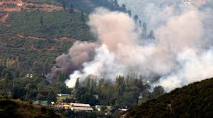
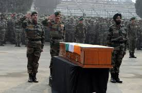
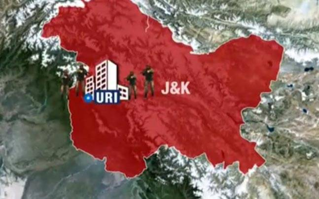

आज कोई हमारे लिए जान दे गया है। हमें उनकी शहादत का ख़्याल इसलिए भी है कि कोई हमें पत्थर की दीवार बन जाने के लिए जान नहीं देता है। वहशी बनाने के लिए जान नहीं देता है। वो जान इसलिए देता है कि हम उसके पीछे सोचे, विचारें,बोलें और लिखें। उसके पीछे मुस्कुरायें और दूसरों को हँसाये। उसके मुल्क को बेहतर बनाने के लिए हर पल लड़ें, जिसके लिए वो जान दे गया है। शहादत की आड़ में वो अपनी नाकामी नहीं छिपा सकते जिनके कारण सीमा से बहुत दूर जवानों का परिवार समाज और व्यवस्थाओं की तंगदिली का सामना करता है। जवानों की शहादत हम नागरिकों के लिए है। नेताओं के ट्वीट के लिए नहीं है। एंकरों की चीख़ के लिए नहीं है। उनकी ललकार नाटकीय है।
 जब वे मोर्चे पर नहीं है तो ललकार के दम पर मोर्चे पर होने की नौटंकी न करें। इससे शहादत का अपमान होता है। यह शहादत उनके लिए है जो अपने स्तर पर जोखिम उठाते हुए मुल्क की जड़ और ह्रदयविहीन हो चुकी सत्ता को मनुष्य बनाने के लिए पार्टियों और सरकारों से लड़ रहे हैं। अफ़सोस इस बात का है कि नेता बड़ी चालाकी से शहादत के इन गौरवशाली किस्सों से अपना नकली सीना फुलाने लगते हैं। अपनी कमियों पर पर्दा डालने के मौके के रूप में देखने लगते हैं। गुर्राने लगते हैं। दाँत भींचने लगते हैं। जबड़ा तोड़ने लगते हैं। आँख निकालने लगते हैं। वक्त गुज़रते ही शहादत से सामान्य हो जाते हैं। फिर भूल जाते हैं। कोई किसी को सबक नहीं सीखाता है। सबक सीखाने से दुनिया आतंक से मुक्त हो चुकी होती तो बहुत से मुल्कों के जत्थे सबक सीखाने कब से निकले हुए हैं। बात करने और बात न करने की कूटनीतिक चालों के बीच एक गोली चलती है जो जवानों के सीने के आर पार होती हुई हम सबके ज़हन में धँस जाती है। युद्ध की भाषा बोलने वालों के लिए युद्ध प्राइम टाइम हो गया है। वो नंबर वन होने का ज़रिया है। ज़रिया न होता तो ये सरकारों के एजेंडे का हथियार न बनते बल्कि नागरिकों के जीवन को बेहतर बनाने के लिए सरकारों से लड़ते। सख़्त सवाल करते। मगर आप समझेंगे नहीं। आप भी भावुक होकर चीखेंगे। फिर धीरे धीरे रोज़ उस शहादत का अपमान करने के लिए चोरी से लेकर सीनाज़ोरी करेंगे। तरह तरह के समझौते करेंगे। सीमा पर युद्ध पुकारेंगे,दूर बैठे अपना घर भरेंगे। नागरिकों को तरह तरह के बहाने से मारेंगे। उन्हें लड़ायेंगे, अफवाह फैलायेंगे लेकिन एक या सत्रह जवान की शहादत सुनते ही राष्ट्रवाद से ओत प्रोत हो जायेंगे।
जब वे मोर्चे पर नहीं है तो ललकार के दम पर मोर्चे पर होने की नौटंकी न करें। इससे शहादत का अपमान होता है। यह शहादत उनके लिए है जो अपने स्तर पर जोखिम उठाते हुए मुल्क की जड़ और ह्रदयविहीन हो चुकी सत्ता को मनुष्य बनाने के लिए पार्टियों और सरकारों से लड़ रहे हैं। अफ़सोस इस बात का है कि नेता बड़ी चालाकी से शहादत के इन गौरवशाली किस्सों से अपना नकली सीना फुलाने लगते हैं। अपनी कमियों पर पर्दा डालने के मौके के रूप में देखने लगते हैं। गुर्राने लगते हैं। दाँत भींचने लगते हैं। जबड़ा तोड़ने लगते हैं। आँख निकालने लगते हैं। वक्त गुज़रते ही शहादत से सामान्य हो जाते हैं। फिर भूल जाते हैं। कोई किसी को सबक नहीं सीखाता है। सबक सीखाने से दुनिया आतंक से मुक्त हो चुकी होती तो बहुत से मुल्कों के जत्थे सबक सीखाने कब से निकले हुए हैं। बात करने और बात न करने की कूटनीतिक चालों के बीच एक गोली चलती है जो जवानों के सीने के आर पार होती हुई हम सबके ज़हन में धँस जाती है। युद्ध की भाषा बोलने वालों के लिए युद्ध प्राइम टाइम हो गया है। वो नंबर वन होने का ज़रिया है। ज़रिया न होता तो ये सरकारों के एजेंडे का हथियार न बनते बल्कि नागरिकों के जीवन को बेहतर बनाने के लिए सरकारों से लड़ते। सख़्त सवाल करते। मगर आप समझेंगे नहीं। आप भी भावुक होकर चीखेंगे। फिर धीरे धीरे रोज़ उस शहादत का अपमान करने के लिए चोरी से लेकर सीनाज़ोरी करेंगे। तरह तरह के समझौते करेंगे। सीमा पर युद्ध पुकारेंगे,दूर बैठे अपना घर भरेंगे। नागरिकों को तरह तरह के बहाने से मारेंगे। उन्हें लड़ायेंगे, अफवाह फैलायेंगे लेकिन एक या सत्रह जवान की शहादत सुनते ही राष्ट्रवाद से ओत प्रोत हो जायेंगे।

जो देश के लिए गोली खाता है, उसके लिए ललकार की भाषा मत बोलिये। सर झुकाकर मौन रहिए। उसकी ईमानदारी को अपनी सियासी बेइमानियों को पवित्र बनाने में इस्तमाल मत कीजिये। भाषा को युद्ध का मैदान मत बनाइये। कुछ लोग किसी को ललकार रहे हैं कि बहुत बोलते थे,अब क्या करेंगे। वो लोग भी ऐसी ललकारों के दबाव में युद्ध की भाषा बोल रहे हैं। युद्ध हमेशा बेनतीजा होता है। युद्ध हो चुका है मगर कुछ भी नहीं रूका है। आतंकवाद के सहारे जहाँ जहाँ राष्ट्रवाद खड़ा हुआ है, वहाँ वहाँ दोनों खेमों में हथियारों की बिक्री बढ़ी है। सुरक्षा कविता से नहीं हो सकती है लेकिन सुरक्षा युद्ध की बात करके भी नहीं होती है। क्या हम अपनी हर लड़ाई हार चुके हैं? क्या हमने लड़ाई के सारे रास्ते बंद कर दिये हैं? युद्ध का नतीजा नहीं निकलेगा तो फिर हम क्या करेंगे। किसी ने कहा है कि हमें भी फ़िदायीन पैदा करना चाहिए। यह बात बताती है कि हम अब मौक़ापरस्त हो गए हैं। आतंक के जवाब में आतंकवाद। हथियार के जवाब में हथियार। हर तरफ हथियारों की उपलब्धता है। हर कोई ख़रीदार है। कोई इस हिंसा के ख़िलाफ़ लंबी लड़ाई नहीं लड़ना चाहता । हिंसा की यही जीत है। एक गोली से हम हिंसा की बात करने लगते हैं। कभी रणनीति न होने का रोना रोते हैं, कभी कहते हैं रणनीति को गोली मारो,युद्ध करो। क्या युद्ध बग़ैर रणनीति के होता है? जिन एक्सपर्ट को गाली दी जा रही है वो तो चैनलों की खिड़कियों में बैठे हैं।

उन्हें क्यों गाली दी जा रही है? क्या अब तक सरकारें उन्हीं से पूछकर और उनकी सुनकर कुछ नहीं कर पा रही थीं? मीडिया की इन सब चालाकियों से दूर रहिए।क्या मीडिया इसके बहाने दूसरे विचारों को संकेत दे रहा है कि सीमा पर कुछ न कर पायें तो तुम्हीं को कूटेंगे? तो फिर आप देखिये कि शहादत का कौन कैसे इस्तमाल कर रहा है। चादर, केक,आम ये सब चलता रहेगा। इन सबमें कोई दोष नहीं है। दोष देने वाले भी शहादत का इस्तमाल कर रहे हैं। युद्ध और संवाद से आगे सोचिये।दोनों ही फ़ेल रहे हैं।नया सोचिये।हम ये सब होने कैसे दे रहे हैं? आज से नहीं अब तो कई वर्षों से हो रहा है। क्या न होने देने के सारे विकल्प समाप्त हो चुके हैं? जवाब दिया जाए मगर लाभ उठाने के लिए नहीं, सवालों को कुचलने के लिए नहीं बल्कि वाक़ई जवाब देने के लिए। किसी ने हमारे लिए शहादत दी है,उनके बारे में ईमानदारी से सोचिये। किसी से घूस लेकर, टैक्स चुराकर,झूठ बोलकर,धक्का देने के बाद टीवी के सामने बैठ कर अपनी भावनाओं को बेईमानी मत करने दीजिये। किसी महात्मा के पाँव छूकर अपने पाप मिटाने वालों, नौटंकी मत करो।

चुप रहो और उनके बारे में सोचो कि देश के लिए जान देने वाला,उसके लिए भी जान देता है जो देश के भीतर देश के लिए जान की बाज़ी लगाते हैं। सत्रह जवानों की शहादत को याद करते हुए ख़ुद की कमियों और बेइमानियों के बारे में सोचिये,उन्हें कम से कम कीजिये ताकि मुल्क कुछ बेहतर हो सके,मनुष्य हो सके, जिसके लिए वो शहीद हुए हैं। अगर हिंसा ही उपाय है तो वे लोग व्हाट्स अप और फेसबुक बंद कर आगे आएं। मीडिया का संयम टूट रहा है तो वो मोर्चे पर चला जाए। बताये कि युद्ध कैसा होगा,होगा तो क्या होगा? क्या उस युद्ध में कोई शहीद नहीं होगा? मुझे मालूम नहीं क्या किया जाना चाहिए लेकिन इस दुनिया में अगल बातचीत का रास्ता झूठमूठ का खेल है तो युद्ध भी झूठमूठ का खेल है। मन दुखी है। वहाँ है जहाँ शहादत की ख़बर पहुँची होगी।